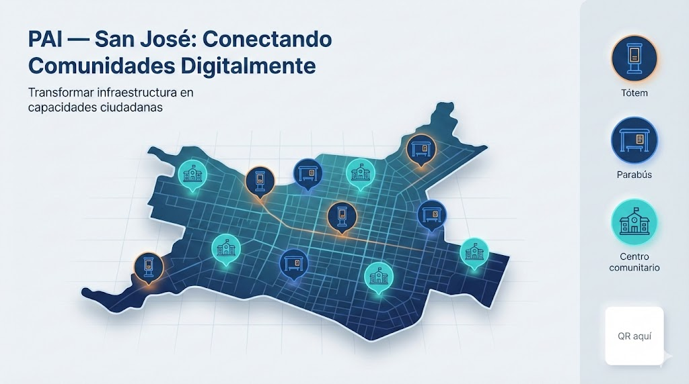

Plan de Apropiación Inclusiva (PAI)
Conectando Comunidades Digitalmente en San José
Transformando la infraestructura inteligente en equidad social real. Una iniciativa alineada con la Agenda 2030 (ODS 9, 11 y 17).
El Desafío: Superar el "Dualismo Digital"
San José cuenta con una infraestructura robusta (115 tótems, 60 parabuses conectados). Sin embargo, los datos muestran una brecha de apropiación significativa: la tecnología existe, pero su uso se concentra en el centro, excluyendo a los barrios periféricos.
Objetivo: Transformar activos tecnológicos pasivos en capacidades ciudadanas activas, priorizando la inclusión y la seguridad.
¿Por qué importa este proyecto?
Más que conectar dispositivos, buscamos conectar personas y oportunidades.
Inclusión Digital Real
Adultos mayores, mujeres y jóvenes en zonas periféricas obtendrán las herramientas para aprovechar la tecnología pública.
Liderazgo en Innovación
Posicionar a San José como referente regional de "Smart City" con enfoque humano y de derechos digitales.
Tejido Social
La tecnología como catalizador comunitario a través de talleres, mentores y espacios de aprendizaje.
Nuestra Solución: El Plan de Apropiación Inclusiva
Una estrategia integral que articula código abierto, formación comunitaria y gobernanza ética.
📱 MAC (Módulo Ciudadano)
Plataforma web/móvil de código abierto y marca blanca con mapa interactivo, tutoriales y canal de reporte.
🛡️ Ética y Gobernanza
Marco pionero de privacidad por diseño y auditorías públicas para garantizar la transparencia en el uso de datos.
💰 Sostenibilidad (O&M)
Aseguramos el futuro con una partida fija del 2% del presupuesto operativo municipal para mantenimiento y soporte.
Resumen del PAI
El Plan de Apropiación Inclusiva (PAI) busca convertir la infraestructura de la ciudad —tótems, parabuses y puntos de conectividad— en capacidades ciudadanas. Se apoya en software libre (MAC), programas de capacitación y un marco local de gobernanza de datos.
Fases
Fase 1 (Meses 1–6): Desarrollo del MAC, aprobación del marco legal y piloto en 2 distritos.
Fase 2 (Meses 7–12): Alfabetización en 8 centros, programa de jóvenes mentores y expansión a 6 distritos adicionales.
Fase 3 (Meses 13–18): Evaluación de impacto, ajustes técnicos y preparación del paquete MIPD.
Impacto esperado & KPI
- Duplicar el uso ciudadano de recursos tecnológicos.
- Más de 2,000 personas capacitadas a 18 meses.
- Reducción medible del dualismo digital entre distritos.
Presupuesto orientativo (porcentajes): Desarrollo MAC 35%, Capacitación 25%, O&M 20%, Evaluación 10%, Contingencia 10%.
Cooperación & MIPD
Propuesta del Mecanismo de Interoperabilidad para la Paradiplomacia Digital (MIPD) para compartir el MAC como bien público digital, facilitar hermanamientos y acceder a fondos internacionales.
Hoja de Ruta a 18 Meses
Implementación escalonada para garantizar éxito, evaluación y escalabilidad.
Fase 1: Despliegue y Gobernanza
Desarrollo del software MAC. Aprobación del marco legal. Lanzamiento de piloto en 2 distritos.
InicioFase 2: Capacitación y Escala
Alfabetización en 8 centros comunitarios. Programa "Jóvenes Mentores". Expansión a 6 distritos más.
En ProgresoFase 3: Evaluación y Transferencia
Medición de KPIs de impacto. Ajustes finales. Preparación del paquete MIPD para compartir globalmente.
FuturoVisualizando el Futuro
Proyecciones conceptuales de la integración tecnológica en la ciudad.
Integración Urbana (Proyección Realista)
Interfaz digital intuitiva superpuesta a la cartografía real de San José.
.jpg)
*Prototipo conceptual basado en la geografía municipal.
Visión Conceptual del Ecosistema (Demo)
Representación de la red interconectada de puntos de servicio ciudadano.
*Este mapa representa la visión estratégica del proyecto (Vista Preliminar).
MIPD Global: Cooperación y Replicabilidad
Presentamos el Mecanismo de Interoperabilidad para la Paradiplomacia Digital (MIPD) para compartir nuestro modelo.
Código Abierto
El software MAC se compartirá como bien público digital (GitHub) para cualquier ciudad.
Hermanamientos
Acuerdos de cooperación técnica directa para replicar el modelo de "Smart City Inclusiva".
Alianzas ONU/BID
Colaboración con organismos internacionales para escalar el impacto y establecer estándares.
Contacto y Retroalimentación
Su opinión es fundamental. Envíenos sus comentarios o propuestas.